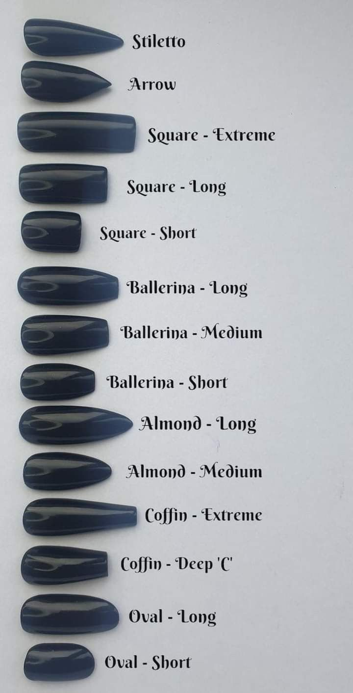

In order to look clean, you have to take care of your nails as well. Here you will find various of ideas/inspo for gel/acrylic nails and
tips on how to take care,give a shape, grow and maintain your own natural nails
First if you want to do your nails you need to find the perfect shape and lenght for you and your nails.
